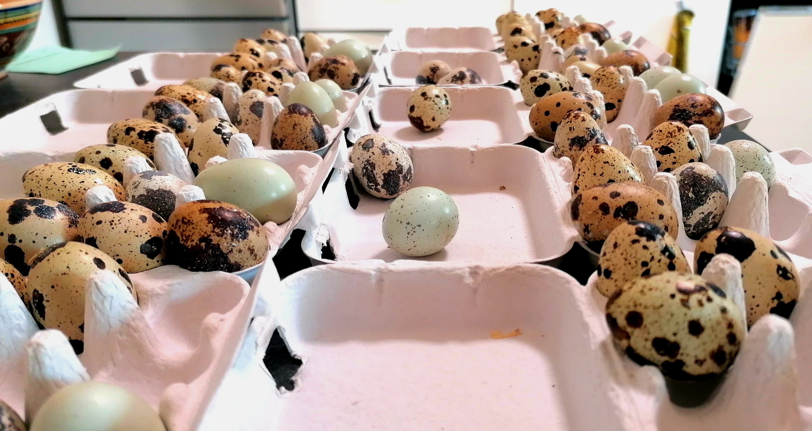
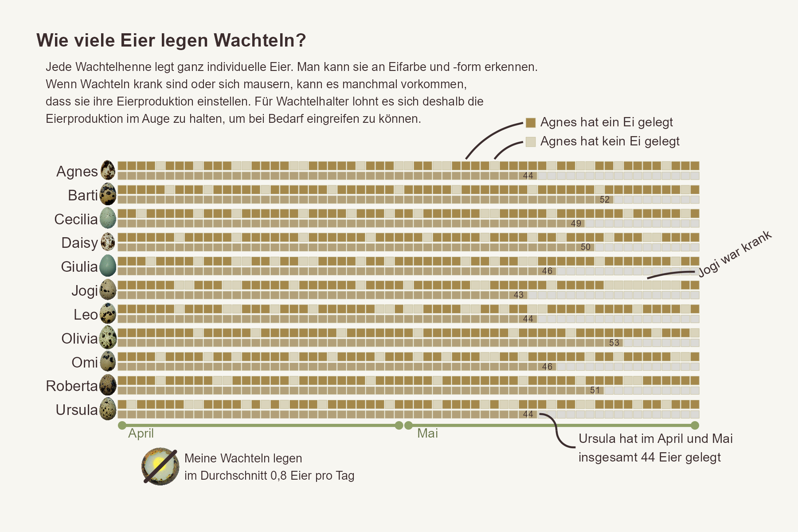

The Quail are Laying
Why it is important to monitor quail egg production
My quail adventure has only just begun. Last year I bought 5 quails at a local market and built a coop for the little birds. The 5 quails became 12 and egg production took off. Quails are really small, curious and look a bit like little dinosaurs (they are also fast and therefore very difficult to photograph).

They can't fly, but they suddenly jump 1.5 metres high when they get scared. Quails come in 3 different sizes (small quails for egg production, dual-purpose quails and meat quails) and in many different colours. But not only the plumage looks different, the eggs also have different shades of brown, are differently speckled and some eggs are even blue. This is why quails can be recognised by their eggs (once you have observed which quail lays which egg).
Eggs can already tell you a lot about the well-being of the animals. A thin shell, for example, indicates a calcium deficiency, while a deformation of the eggs can be an indicator of a laying problem. If a quail does not lay an egg for a long time, you should take a very close look at its state of health and possibly place it in a quarantine pen. However, there are also completely natural reasons for a break in laying. Quails stop laying both in winter, when the sun shines for less than 12 hours a day, and during moulting. Apart from the health reasons, I am of course also interested in how many eggs my quails lay and how well the quails utilise the feed. My birds lay about 0.8 eggs per day. Enough to provide family and friends with small eggs. In the graph you can see which quail lays which egg, that Olivia lays the most eggs and that Jogi once took a short break from laying during a cold. By the way, in case you're wondering why only 11 eggs are shown here for 12 quails: Unfortunately, the quail rooster doesn't lay any eggs.
